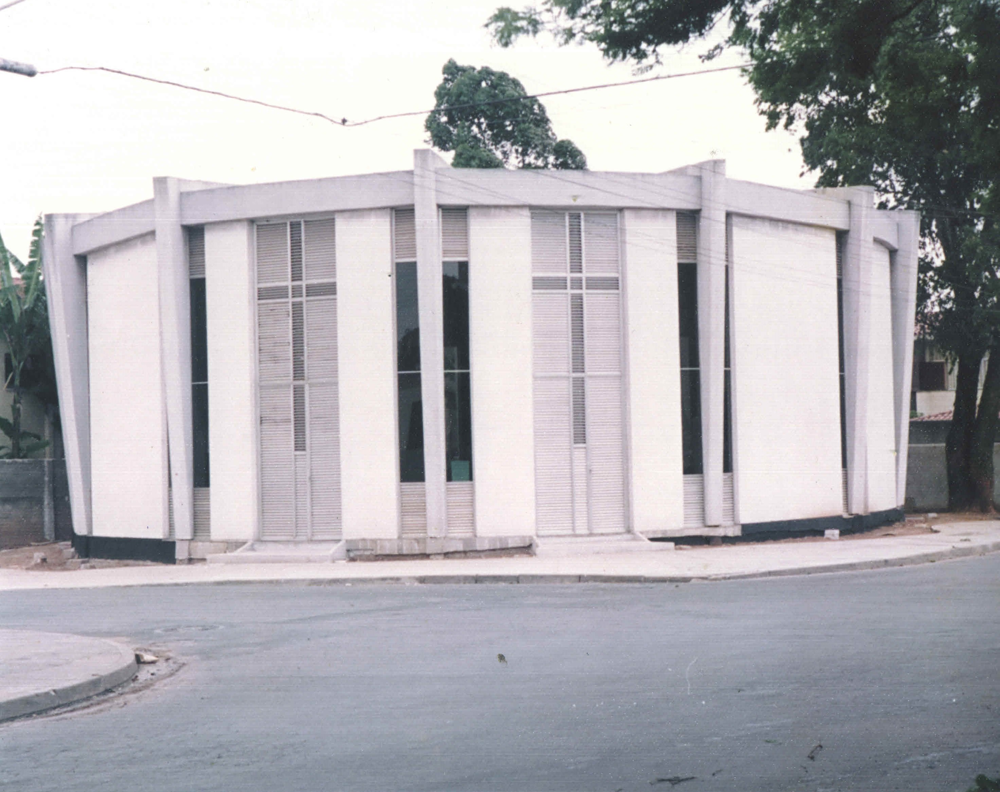
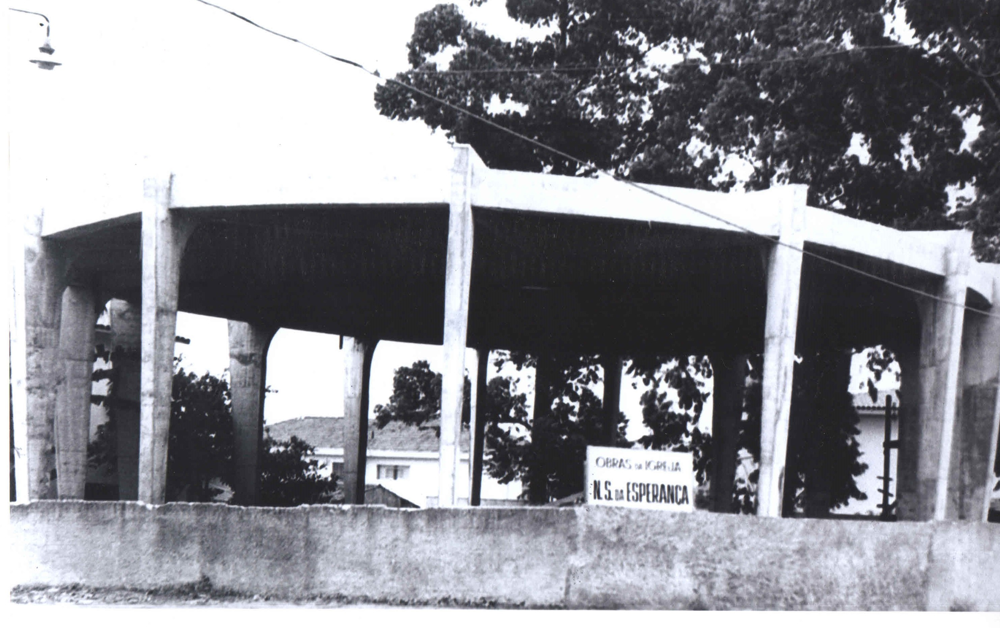

Missas
- Segunda a sexta
- 8h
- Terça a sexta
- 18h
- Sábado
- 16h
- Domingo
- 8h30, 11h e 18h
Uma comunidade que começou a celebrar na casa de uma família da Praça Paul Harris.
Av. dos Eucaliptos, 556 · Moema, São Paulo

De terça a sexta, das 15h às 17h45. Antes de ir, confirme a disponibilidade com a secretaria.
Às quintas, adoração ao Santíssimo às 15h e bênção às 17h45.
Horários publicados pela paróquia · Consulta em 26/11/2026. Festas e feriados podem ter alterações.
Não há data especial confirmada nesta demonstração. Veja os avisos da comunidade.
29 e 30 de junho de 2024 · Festa Junina da paróquia
Para preparar o batismo de seu filho, consulte as orientações para pais e padrinhos.
Para celebrar o casamento na matriz, conheça os primeiros passos indicados pela paróquia.
Roberto e Helena recebem as primeiras missas em casa. Depois, a comunidade se reúne no Grupo Escolar Napoleão de Carvalho Freire.
Um barracão de eucaliptos na esquina com a Alameda Jauaperi acolhe as celebrações.
Em 9 de março, o cardeal Agnelo Rossi lança a pedra fundamental. Anca e Cláudio Di Segni assinam o projeto.
A paróquia é criada em 29 de junho de 1970. A primeira missa no novo templo é celebrada em agosto; a instalação oficial acontece em abril de 1971.

Em abril de 1969, a comunidade recebeu na Praça Paul Harris uma imagem de Nossa Senhora da Esperança vinda de Portugal. Dali, os fiéis a levaram para a igreja provisória.
Maria acolhe o anúncio do anjo sem conhecer todo o caminho que tem pela frente (Lc 1,26–38).
Como imitá-la: na oração, apresente a Deus uma decisão difícil e dê o primeiro passo possível.
Ao saber da gravidez de Isabel, Maria vai ao seu encontro e permanece com ela cerca de três meses (Lc 1,39–56).
Como imitá-la: visite alguém que precisa de companhia e ofereça uma ajuda concreta.
Av. dos Eucaliptos, 556 · Moema, São Paulo
(11) 5531-9519
O site paroquial informa terça a sábado, 9h–18h, e domingo, 9h–12h30. Como o diretório arquidiocesano indica outro expediente, confirme antes da visita.
WhatsApp da secretariaAv. dos Eucaliptos, 556 · Moema, São Paulo